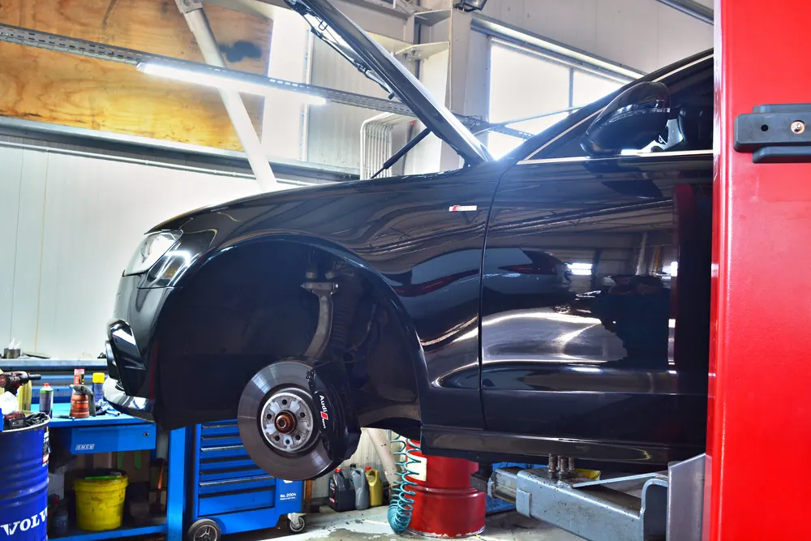
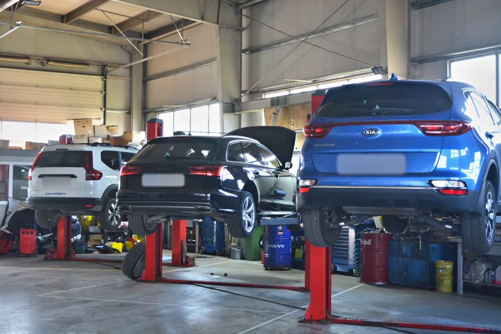
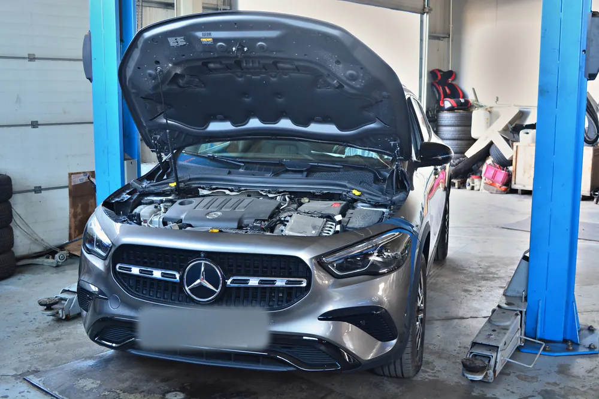

Mecanică auto în Brașov, multimarcă și autorizată RAR
De la revizia de rutină până la reparații complexe, ne ocupăm de mecanica mașinii tale la standarde de service autorizat. Lucrăm pe majoritatea mărcilor, cu factură pentru persoane fizice și firme.
La GAV Auto găsești un atelier de mecanică în Brașov, cu mecanici cu experiență și aparatură de diagnoză. Fie că e o revizie la termen, un zgomot care te îngrijorează sau o defecțiune care a aprins un martor în bord, verificăm mașina și îți spunem clar de ce are nevoie, fără lucrări inutile.
Ce reparăm și întreținem
- Revizii periodice: schimb ulei și filtre (ulei, aer, polen, combustibil), verificare generală.
- Diagnoză computerizată: citim erorile din calculator și găsim cauza, nu doar simptomul.
- Sistem de frânare: plăcuțe, discuri, lichid de frână, verificare completă.
- Distribuție și accesorii: kit distribuție, curea și rulmenți, pompă de apă.
- Ambreiaj și transmisie: înlocuire kit ambreiaj, verificare cutie.
- Suspensie și direcție: amortizoare, brațe, capete de bară, rulmenți, reglaj geometrie roți.
- Aer condiționat: verificare și încărcare freon, pentru R134a și R1234yf. Vezi detalii.


Cum lucrăm
Ne aduci mașina, o verificăm și îți spunem ce trebuie făcut și de ce, înainte să începem. Nu pornim lucrări neaprobate. Iar pentru că avem sub același acoperiș și tinichigerie, vopsitorie și stație ITP, rezolvăm la noi și ce ține de caroserie sau de inspecția tehnică, fără drumuri între ateliere.


Intervale orientative de întreținere
Termenele exacte sunt în cartea de service a mașinii și diferă de la un model la altul. Ca reper:
- Ulei și filtru de ulei: la 10.000 - 15.000 km sau o dată pe an, oricare vine primul.
- Filtru de aer și filtru de polen: de regulă la fiecare revizie anuală.
- Lichid de frână: la 2 ani, pentru că absoarbe umezeală și își pierde din eficiență.
- Distribuție: între 60.000 și 120.000 km sau la 5 - 7 ani, în funcție de motor. O curea ruptă poate distruge motorul.
- Plăcuțe de frână: se înlocuiesc când garnitura ajunge la aproximativ 3 mm.
- Lichid de răcire: la 4 - 5 ani sau cum prevede producătorul.
Întrebări frecvente
Lucrați pe marca mașinii mele?
Suntem service multimarcă și lucrăm pe majoritatea mărcilor de pe drum. Spune-ne marca și modelul și îți confirmăm.
La câți kilometri se schimbă uleiul?
Orientativ la 10.000 - 15.000 km sau o dată pe an, oricare vine primul. Intervalul exact e în cartea de service. La mers mult prin oraș, pe distanțe scurte, merită schimbat mai des.
Când se schimbă distribuția?
Depinde de motor: de regulă între 60.000 și 120.000 km sau la 5 - 7 ani. Verificăm intervalul prevăzut de producător pentru modelul tău și îți spunem când e cazul.
S-a aprins martorul „check engine". Mai pot circula?
Dacă e galben și mașina merge normal, poți ajunge cu grijă la service, unde citim eroarea din calculator. Dacă clipește sau motorul merge neregulat, oprește și sună-ne.
Emiteți factură pentru firme?
Da, lucrăm cu factură inclusiv pentru firme cu parc auto, atât la revizii cât și la reparații.
Cât durează o revizie?
O revizie standard (ulei și filtre, verificare) se face de regulă în aceeași zi. Îți spunem termenul exact când te programăm.